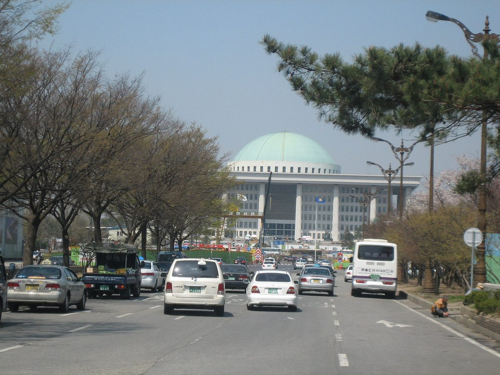

이 대통령, 2027년 예산안 시정연설서 "햇빛소득마을 확산 등 재생에너지 확대에 2조8,000억 원"…농어촌 기본소득 35개 군으로 두 배

820조9,000억 원 예산안, 올해보다 12.8% 늘어…국토대전환·지방주도성장 33조 원, 지방 우대 사업 61개, 국회에 12월 2일 법정기한 안 확정 요청
이재명 대통령이 2일 국회에서 열린 2027년도 예산안 시정연설에서 햇빛소득마을 확산을 비롯한 재생에너지 확대에 2조8,000억 원을 투자하겠다고 밝혔다. 정부가 국회에 낸 내년 예산안은 820조9,000억 원으로 올해보다 12.8% 늘어난 역대 최대 규모이며, 2조8,000억 원은 햇빛소득마을만이 아니라 재생에너지 확대 전체에 잡힌 금액으로 그 가운데 햇빛소득마을 몫은 연설에서 따로 밝히지 않았다. 대통령은 같은 대목에서 전기차 보조금 지원 대상을 역대 최대인 43만 대로 늘렸다고 설명하며 에너지 대전환에 속도를 내겠다고 했다. 농어촌 분야에서는 농어촌 기본소득 대상 지역을 35개 군으로 두 배 늘리고 공익직불금을 3조 원 규모로 키우며, 국토대전환·지방주도성장에는 올해의 두 배가 넘는 33조 원을 넣고 수도권에서 멀수록 재정 지원을 두텁게 하는 지방 우대 사업을 61개로 넓힌다. 대통령은 "관건은 실행과 속도"라며 예산안과 부수 법안이 법정기한인 12월 2일까지 확정되도록 국회의 협력을 요청했고, 예산안은 이제 국회 심사를 거쳐야 한다.
시민에너지 관점
대통령이 국회 예산 연설에서 재생에너지 투자의 맨 앞 사례로 햇빛소득마을을 꼽은 것은, 마을이 발전소의 주인이 되는 모델을 국가 에너지 정책의 앞자리에 올려놓았다는 뜻이다. 다만 2조8,000억 원이 어디에 얼마씩 쓰이는지 아직 드러나지 않아, 큰돈이 대형 사업자 몫으로 흘러가고 마을 사업은 이름만 앞세운 것 아니냐는 우려도 나올 수 있다. 독일이 2000년 재생에너지법(EEG)으로 생산 전력의 고정가격 매입을 보장하자 농민과 시민이 직접 발전소를 세우고 협동조합을 꾸려 전환의 주체가 됐듯, 예산의 효과는 금액의 크기가 아니라 주민이 소유와 결정권을 쥐는 구조에서 나온다. 국회는 심사 과정에서 2조8,000억 원 가운데 주민 소유·마을 사업 몫을 항목별로 밝히고, 주민 조직이 초기 자금 문제로 밀려나지 않도록 하는 금융 장치를 함께 따져야 한다.
출처: 농민신문 2026-11-02 김소진 원문 보기
李大統領、2027年度予算案の施政演説で「太陽光所得村の拡大など再生可能エネルギー拡大に2兆8,000億ウォン」…農漁村基本所得は35郡へ倍増
予算案は820兆9,000億ウォンで今年より12.8%増…国土大転換・地方主導成長に33兆ウォン、地方優遇事業は61件、国会に12月2日の法定期限内の確定を要請
李在明（イ・ジェミョン）大統領は2日、国会で行った2027年度予算案の施政演説で、太陽光所得村の拡大をはじめとする再生可能エネルギーの拡大に2兆8,000億ウォンを投資すると表明した。政府が国会に提出した来年度予算案は820兆9,000億ウォンで今年より12.8%増えた過去最大規模であり、2兆8,000億ウォンは太陽光所得村だけでなく再生可能エネルギー拡大全体に充てる金額で、そのうち太陽光所得村の分は演説では示されなかった。大統領は同じくだりで電気自動車補助金の支援対象を過去最大の43万台に増やしたと説明し、エネルギー大転換を加速させると述べた。農漁村分野では農漁村基本所得の対象地域を35郡へ倍増させ、公益直払金を3兆ウォン規模に拡大するほか、国土大転換・地方主導成長には今年の2倍を超える33兆ウォンを投じ、首都圏から遠いほど財政支援を手厚くする地方優遇事業を61件に広げる。大統領は「カギは実行とスピードだ」として予算案と付随法案が法定期限の12月2日までに確定するよう国会の協力を求めており、予算案はこれから国会の審査を経る。
市民エネルギーの視点
大統領が国会の予算演説で再生可能エネルギー投資の筆頭に太陽光所得村を挙げたことは、村が発電所の持ち主になるモデルを国のエネルギー政策の前面に据えたことを意味する。ただし2兆8,000億ウォンがどこにいくら使われるのかはまだ明らかでなく、大金が大規模事業者に流れ、村の事業は名前だけ掲げられるのではないかという懸念も出うる。ドイツが2000年の再生可能エネルギー法（EEG）で発電した電気の固定価格買取を保証すると、農家と市民が自ら発電所を建て、協同組合をつくって転換の担い手になったように、予算の効果は金額の大きさではなく、住民が所有と決定権を握る仕組みから生まれる。国会は審査の過程で2兆8,000億ウォンのうち住民所有・村の事業の分を項目別に明らかにし、住民組織が初期資金の問題で締め出されないための金融の仕組みもあわせて点検すべきだ。
出典: 農民新聞 2026-11-02 キム・ソジン 原文を読む
李在明总统在2027年度预算案施政演说中表示“将向扩大阳光收入村等可再生能源投入2万8,000亿韩元”…农渔村基本收入扩大一倍至35个郡
预算案820万9,000亿韩元，比今年增长12.8%…国土大转型与地方主导增长投入33万亿韩元，地方优待项目增至61个，请求国会在12月2日法定期限前审定
韩国总统李在明2日在国会发表2027年度预算案施政演说，表示将向扩大阳光收入村等可再生能源扩张投资2万8,000亿韩元。政府提交国会的明年预算案为820万9,000亿韩元，比今年增长12.8%，规模创历史新高；2万8,000亿韩元并非仅针对阳光收入村，而是整个可再生能源扩张的金额，其中阳光收入村所占份额演说中没有单独说明。总统在同一段落中还表示，电动汽车补贴对象已扩大到历史最多的43万辆，并称将加快能源大转型。农渔村领域，农渔村基本收入对象地区将扩大一倍至35个郡，公益直接补贴扩大到3万亿韩元规模；国土大转型和地方主导增长将投入超过今年两倍的33万亿韩元，离首都圈越远财政支持越多的“地方优待项目”扩大到61个。总统表示“关键在于执行和速度”，请求国会协助在法定期限12月2日前审定预算案及附属法案，预算案接下来还须经过国会审议。
市民能源视角
总统在国会预算演说中把阳光收入村列为可再生能源投资的首个例子，意味着让村庄成为电站主人的模式被放到了国家能源政策的前排。不过2万8,000亿韩元具体用在哪里、各用多少尚未公开，也可能有人担心大笔资金流向大型开发商，村庄项目只是被挂在名义上。德国2000年通过《可再生能源法》（EEG）保障发电的固定价格收购后，农民和市民亲自建电站、组建合作社，成为能源转型的主体；同样，预算的成效不在于金额大小，而在于居民能否掌握所有权和决策权的结构。国会应在审议中逐项公开2万8,000亿韩元里居民所有与村庄项目的份额，并一并审查让居民组织不因启动资金问题被挤出的金融机制。
来源: 农民新闻 2026-11-02 Kim So-jin 查看原文
President Lee pledges 2.8 trillion won "for expanding renewables, including spreading Sunlight Income Villages" in 2027 budget speech, doubling farm and fishing basic income to 35 counties
The 820.9 trillion won budget proposal is up 12.8% on this year, with 33 trillion won for national land transformation and region-led growth and 61 programmes favouring regions; the president asked the National Assembly to pass it by the 2 December legal deadline
President Lee Jae-myung said in his speech to the National Assembly on the 2027 budget proposal on 2 November that the government would invest 2.8 trillion won in expanding renewable energy, including spreading Sunlight Income Villages. The budget the government submitted for next year totals 820.9 trillion won, up 12.8% on this year and the largest ever; the 2.8 trillion won covers renewable energy expansion as a whole rather than Sunlight Income Villages alone, and the speech did not specify how much of it goes to the villages. In the same passage the president said the government had raised the number of electric vehicles eligible for subsidies to a record 430,000 and pledged to speed up the energy transition. For rural areas, the farm and fishing village basic income will be doubled to 35 counties and public-interest direct payments to farmers expanded to about 3 trillion won, while 33 trillion won, more than double this year's amount, will go to national land transformation and region-led growth, and the number of "region-favouring" programmes that give more fiscal support the farther a region is from the capital area will rise to 61. Saying "the key is execution and speed", the president asked lawmakers to approve the budget and related bills by the legal deadline of 2 December, and the proposal now goes through parliamentary review.
Citizen Energy View
By naming Sunlight Income Villages first among his renewable energy investments in a budget speech to parliament, the president has moved the model of villages owning their own power plants to the front of national energy policy. Yet it is not yet clear where and how the 2.8 trillion won will be spent, and some may worry that the bulk of the money will flow to large developers while village projects serve only as a label. When Germany's 2000 Renewable Energy Sources Act (EEG) guaranteed fixed purchase prices for the power generated, farmers and citizens built their own plants and formed cooperatives to become the drivers of the transition, showing that a budget's impact comes not from its size but from structures that give residents ownership and decision-making power. During its review, the National Assembly should break down how much of the 2.8 trillion won goes to resident-owned and village projects, and examine financing tools that keep community organisations from being shut out by upfront capital needs.
Source: Nongmin Shinmun (Farmers Newspaper) 2026-11-02 Kim So-jin Read the original